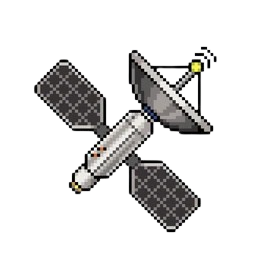
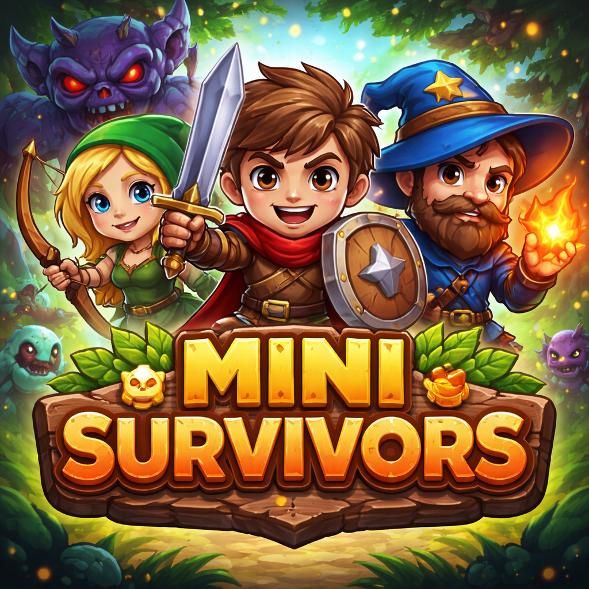

|
Projects:
Blade & Ember
Plague doctor themed browser based third person battle arena.

View Source Code
Youtube Chat Plays DOOM II
Allows YouTube live stream chat to remotely send commands a GBA emulator.

View Source Code
Rugby TCG
An online multiplayer Rubgy card game.

View Source Code
Aerospace Satellite Querying v0.1
Search the atmosphere above you for objects orbiting Earth.

Potentially limited access due to rate limited APIs.
Requires location permissions.
View Source Code
Mini Survivors
Survive infinitely spawning enemies using your sword, dash & potions.

Requires installation from unknown sources.
View Source Code
|
|
In Other News:
12:58PM 24/04/2026 - I am getting started with Ruby on Rails.
I've begun with the Ruby on Rails `Getting Started` guide in the official docs!
Click here for the guide. You can read more about it below.

I made it to Chapter 11 but introduced errors in Chapter 10...

08:41PM 10/03/2026 - Automation Engine Debut
I created an automation engine for global lead generaion!
You can read more about it below.


|